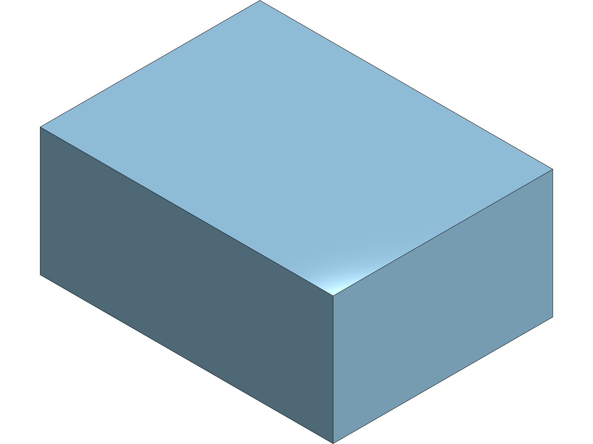
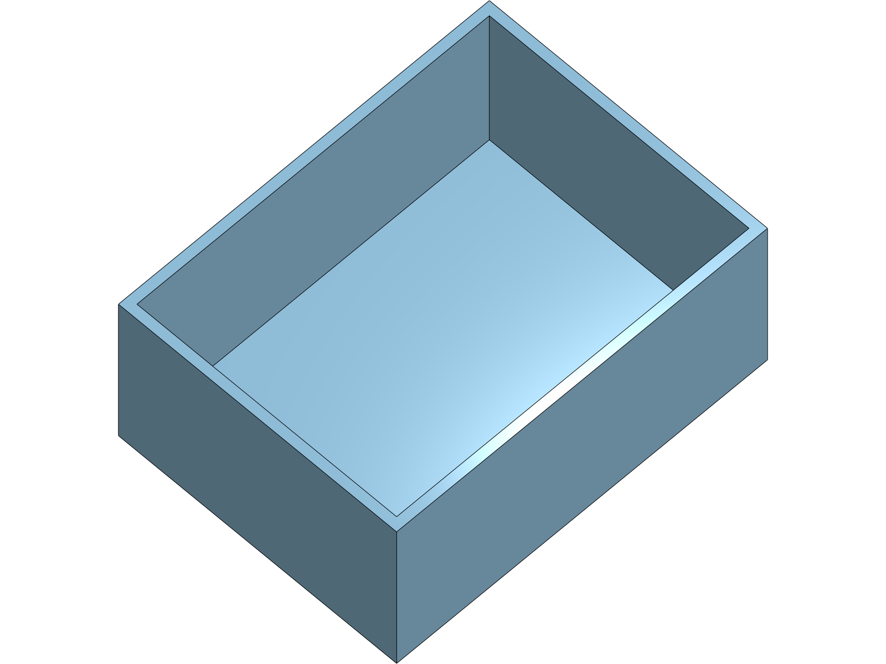
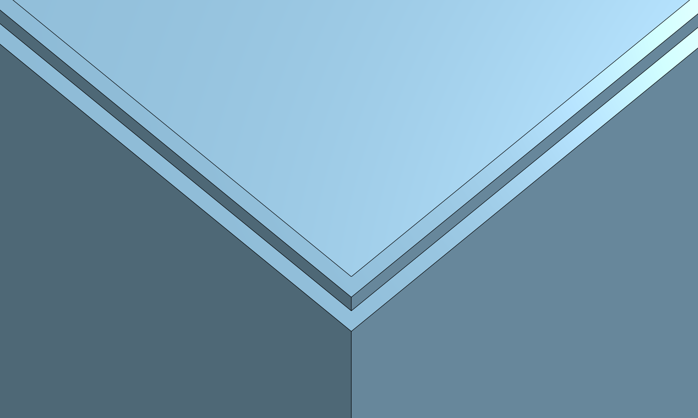
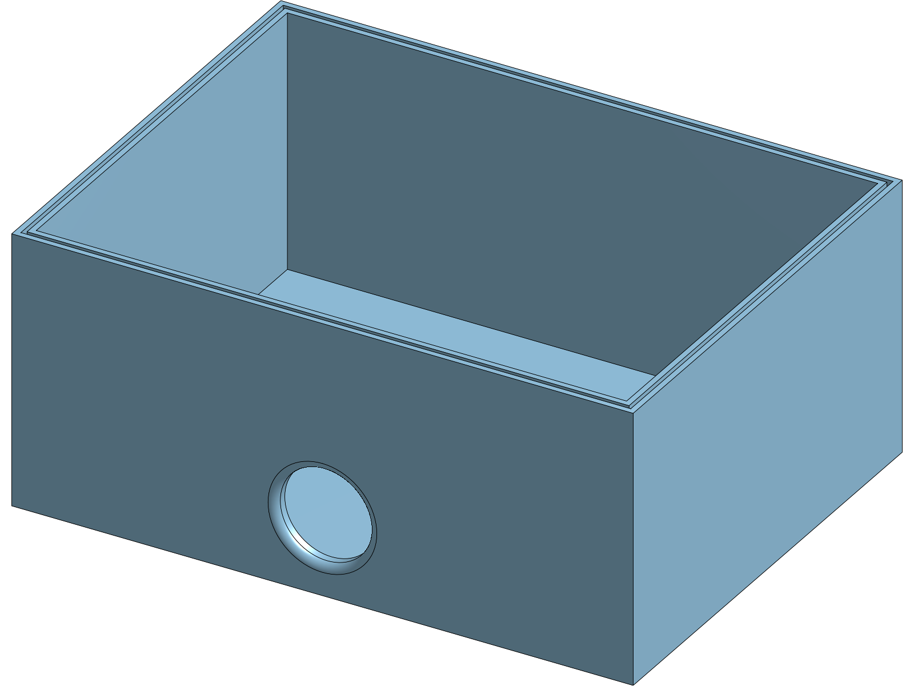
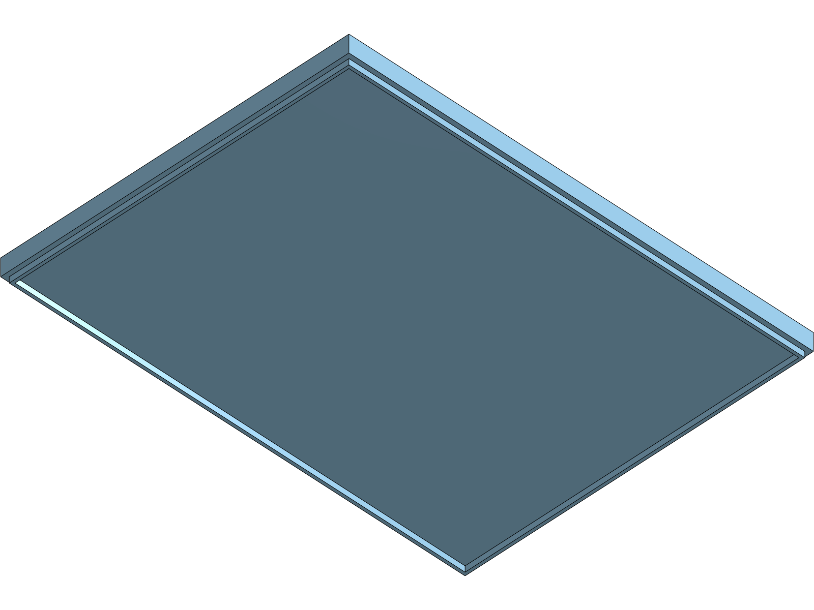
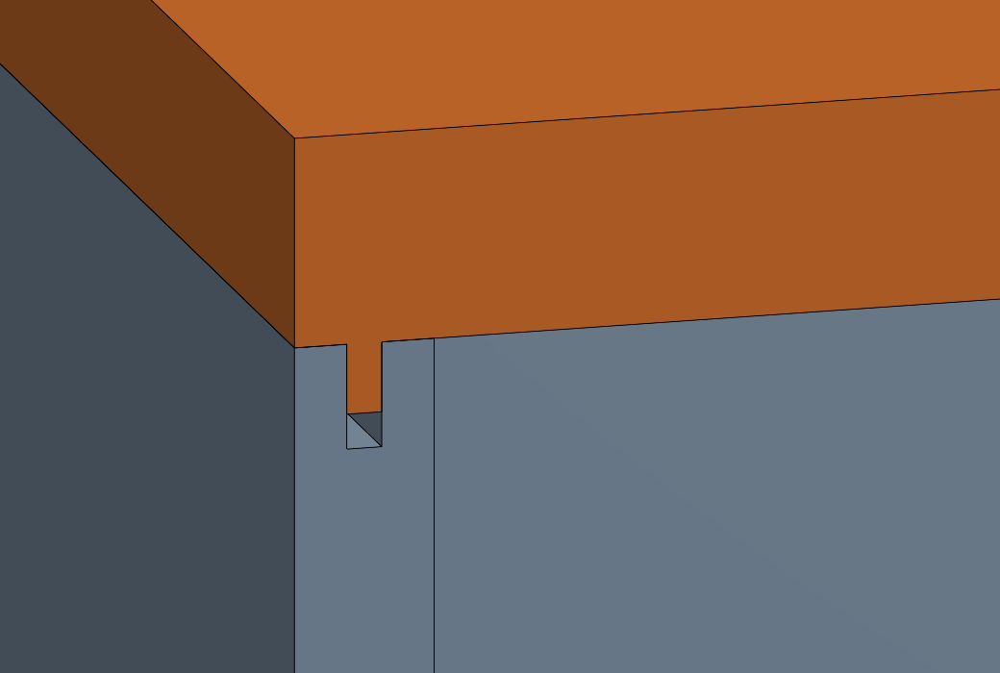
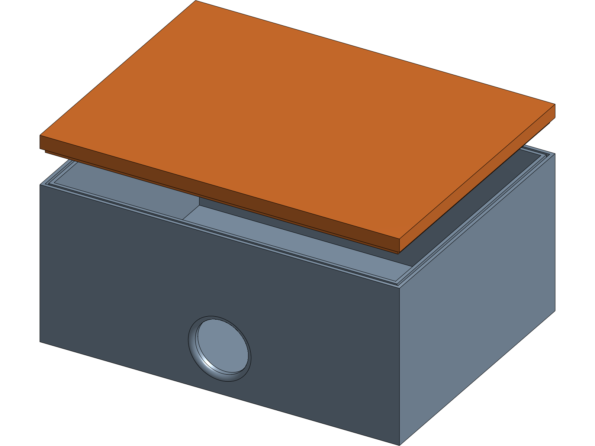

Ton capteur va rester dehors. Tu vas dessiner la boîte qui le protège — creuse, refermable, et qui ne laisse pas entrer l'eau là où elle entre toujours : par les trous qu'on a faits exprès.
🧭 Comment lire ce TP. En clair, ce que tu fais. En italique coloré, ce que tu dois voir se produire à l'écran — si tu ne le vois pas, ne continue pas : reprends l'étape. Les encadrés orange préviennent des pièges. À la fin de chaque partie, une image te montre ce que tu dois obtenir : compare, tu n'as besoin de personne pour te corriger.
En 5e, tu as construit une pièce : le dé. Tu as esquissé, coté, extrudé, enlevé de la matière, adouci des arêtes. En 4e, tu as tenu deux pièces ensemble : tu as tourné un socle, tu l'as assemblé avec le dé, et tu as posé une contrainte pour le centrer sans viser à l'œil.
Cette année, ton objet doit résister à quelque chose de réel. Jusqu'ici, une pièce ratée restait jolie à l'écran. Cette fois, si tu oublies un détail, l'eau entre, le capteur meurt, et personne ne le saura avant la première averse. Tu vas donc apprendre à évider une pièce — le geste de la coque — et à dessiner ce qui rend une boîte étanche : une rainure, un joint, et un passage de câble qui ne fuit pas.
Tu n'as pas fait les TP des années précédentes ? Tout ce qu'il faut savoir est rappelé au fur et à mesure. Les deux gestes d'avant — esquisser puis extruder, assembler puis contraindre — sont redonnés en clair au moment où ils servent.
Comme les deux années précédentes. Et cette fois le document contiendra trois onglets — le boîtier, le couvercle, l'assemblage : autant les nommer tout de suite.
Boitier capteur — TON NOM.Le document s'ouvre sur un onglet Partie Studio 1, en bas de l'écran.Boitier.L'onglet porte le mot Boitier. Tu sauras où tu es quand il y en aura trois.🎯 Tu peux passer à la suite quand : Ton document est créé, nommé, et son premier onglet s'appelle Boitier.
💾 Point de reprise. Tu n'as rien à enregistrer : c'est déjà fait, tout seul, depuis le début. Si le poste redémarrait maintenant, tu retrouverais ton travail exactement ici.
On commence par un bloc plein, exactement comme le cube du dé. Rien de nouveau ici : c'est le geste que tu connais, et il va vite.
80 sur 60, puis valide l'esquisse.Le rectangle devient entièrement noir : plus rien ne peut bouger.35.Un pavé plein apparaît. C'est le volume extérieur de ton boîtier — l'encombrement qu'il prendra dans la cour.⚠️ 80 × 60 × 35 est un exemple, dimensionné pour une petite carte et une pile. Si ton capteur est plus gros, agrandis — mais garde ces valeurs en tête, tout le reste en dépend.

🎯 Tu peux passer à la suite quand : Un pavé plein de 80 × 60 × 35 existe.
💾 Point de reprise. Tu n'as rien à enregistrer : c'est déjà fait, tout seul, depuis le début. Si le poste redémarrait maintenant, tu retrouverais ton travail exactement ici.
Voici le geste nouveau de l'année. Tu pourrais enlever de la matière comme tu l'as fait pour les points du dé — mais il faudrait calculer chaque paroi, et rater d'un millimètre. La coque fait le travail autrement : tu désignes la face à ouvrir, tu donnes une épaisseur, et le logiciel évide tout le reste en la respectant partout.
2, puis valide.Le pavé devient une boîte. Tourne la vue : les parois font partout la même épaisseur, y compris dans les coins.⚠️ 2 mm est un exemple, et c'est un minimum en impression 3D : en dessous, la paroi devient translucide et cassante. Essaie 1 mm pour voir la différence, puis reviens à 2.

🎯 Tu peux passer à la suite quand : Ta boîte est creuse, ouverte sur le dessus, avec des parois de 2 mm partout.
💾 Point de reprise. Tu n'as rien à enregistrer : c'est déjà fait, tout seul, depuis le début. Si le poste redémarrait maintenant, tu retrouverais ton travail exactement ici.
Une boîte fermée n'est pas une boîte étanche. Entre le boîtier et son couvercle il reste un jeu, invisible mais bien réel, et l'eau s'y engouffre par capillarité. On y loge donc un joint — un cordon souple qu'on écrase en fermant. Il lui faut sa place : une rainure.
0,5 vers l'intérieur, puis le contour intérieur de 0,5 vers l'extérieur.Deux nouveaux contours apparaissent, formant un anneau fermé de 1 mm de large au milieu du bord.1,5.Une gorge apparaît tout autour du bord supérieur. C'est le lit du joint.⚠️ 1 mm de large sur 1,5 mm de profond convient à un joint torique de 2 mm de diamètre, qu'on écrase d'un quart. Ces valeurs se lisent dans le catalogue du joint — on ne les invente pas.

🎯 Tu peux passer à la suite quand : Une gorge continue fait le tour du bord supérieur, sans interruption.
💾 Point de reprise. Tu n'as rien à enregistrer : c'est déjà fait, tout seul, depuis le début. Si le poste redémarrait maintenant, tu retrouverais ton travail exactement ici.
Voici ce qui trompe tout le monde. On soigne le couvercle, le joint, les parois — et l'eau entre par le trou du câble, celui qu'on a percé exprès. Un boîtier étanche se juge à ses ouvertures, pas à ses parois.
12.Le cercle se pose sur la paroi verticale. Tu peux le déplacer tant qu'il n'est pas coté par rapport aux bords.⚠️ Ø 12 correspond à un presse-étoupe M12 du commerce, la pièce qui serre le câble et bloque l'eau. C'est lui qui rend le trou étanche — pas le trou lui-même.

🎯 Tu peux passer à la suite quand : Un passage de câble traverse une paroi verticale, en partie basse, bord adouci.
💾 Point de reprise. Tu n'as rien à enregistrer : c'est déjà fait, tout seul, depuis le début. Si le poste redémarrait maintenant, tu retrouverais ton travail exactement ici.
Le couvercle n'est pas une plaque posée dessus : c'est une pièce dessinée à partir du boîtier. Il doit tomber pile sur la rainure, sinon le joint ne s'écrase pas.
Couvercle.Un deuxième atelier s'ouvre, vide.80 sur 60, puis extrude-le de 3.Une plaque apparaît, exactement aux dimensions extérieures du boîtier.⚠️ 3 mm est un exemple : assez pour ne pas fléchir sur 80 mm, assez peu pour ne pas alourdir.
1.Une nervure court sous le couvercle, dessinant le même parcours que la gorge du boîtier.
🎯 Tu peux passer à la suite quand : Ton couvercle a une nervure continue, plus courte que la gorge du boîtier.
💾 Point de reprise. Tu n'as rien à enregistrer : c'est déjà fait, tout seul, depuis le début. Si le poste redémarrait maintenant, tu retrouverais ton travail exactement ici.
Tu connais ce geste depuis l'an dernier : on insère, on fixe la première pièce, on contraint la seconde. Rien de nouveau — sauf que cette fois, la contrainte te dira si tes deux pièces vont vraiment ensemble.
⚠️ La vue en coupe est l'outil du vérificateur : c'est le seul moyen de voir ce qui se passe là où l'objet est fermé.

🎯 Tu peux passer à la suite quand : Le couvercle se pose sur le boîtier, nervure dans la gorge, et la coupe montre l'espace du joint.
💾 Point de reprise. Tu n'as rien à enregistrer : c'est déjà fait, tout seul, depuis le début. Si le poste redémarrait maintenant, tu retrouverais ton travail exactement ici.
Un travail qu'on ne retrouve pas n'a pas eu lieu. Ce dernier palier ne fabrique rien : il met ta pièce à l'abri et te donne le fichier que la machine attend.
Boitier capteur - TES INITIALES.Le nom change dans le bandeau du haut.⚠️ STL décrit la surface par un maillage de triangles : c'est ce que mange une imprimante 3D, mais la pièce n'y est plus modifiable — on ne peut plus revenir sur une cote. STEP garde la géométrie exacte et s'ouvre dans n'importe quel autre logiciel de CAO. Autrement dit : STL pour fabriquer, STEP pour transmettre. En 3e, le boîtier protège un capteur réel : il sera imprimé, donc STL. Mais exporte aussi en STEP — c'est le fichier que tu transmettrais à quelqu'un qui doit modifier ta pièce, et un joint qui fuit se corrige toujours.
0,05 — et la machine fabriquera un grain de cinquante microns, invisible. La description est juste, l'unité manque, la machine se trompe d'un facteur mille. C'est très exactement la question du TP : décrire assez précisément pour qu'une machine fabrique sans nous.⚠️ Ce réglage est à Mètre par défaut. Constaté sur poste réel.
⚠️ Binaire ou texte, c'est la même géométrie écrite de deux façons : le texte se lit dans un éditeur — on y voit chaque triangle avec ses trois sommets — mais pèse cinq à six fois plus lourd. Ouvrir une fois un STL texte dans le Bloc-notes est une belle façon de voir qu'un objet 3D n'est qu'une liste de triangles. La résolution est la finesse de ce maillage : en Grossier, les facettes se voient sur les congés et les creux ronds ; en Fin, elles disparaissent, au prix d'un fichier plus gros.
⚠️ Laisse « Exporter les modèles avec l'axe Y vers le haut » décoché : cette case sert aux logiciels qui n'ont pas la même convention d'orientation.
🎯 Tu peux passer à la suite quand : ton document porte ton nom, et le fichier exporté apparaît dans un onglet en bas de ton document.
Le travail est fini. Ce qui suit ne sert à rien — sauf à donner envie de le fabriquer.
⚠️ Garde-les : ce sont elles que tu montreras, pas le fichier.

🎯 Tu peux passer à la suite quand : Ton boîtier est coloré, tu as comparé trois matériaux, et tu peux dire lequel tu retiendrais et pourquoi.
💾 Point de reprise. Tu n'as rien à enregistrer : c'est déjà fait, tout seul, depuis le début. Si le poste redémarrait maintenant, tu retrouverais ton travail exactement ici.
Tu sais ouvrir un plan, esquisser, coter, extruder, enlever de la matière et adoucir une arête. C'est tout ce qu'il faut pour dessiner l'objet de ton projet.
← Revenir à ta séquence et dessiner ton support
Garde ton document : on repartira de ces gestes-là, en 4e, pour assembler deux pièces — et là, une pièce pourra en empêcher une autre de bouger.